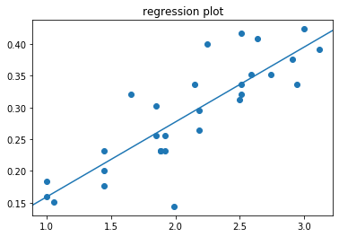
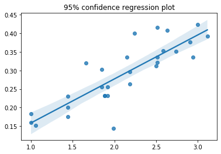
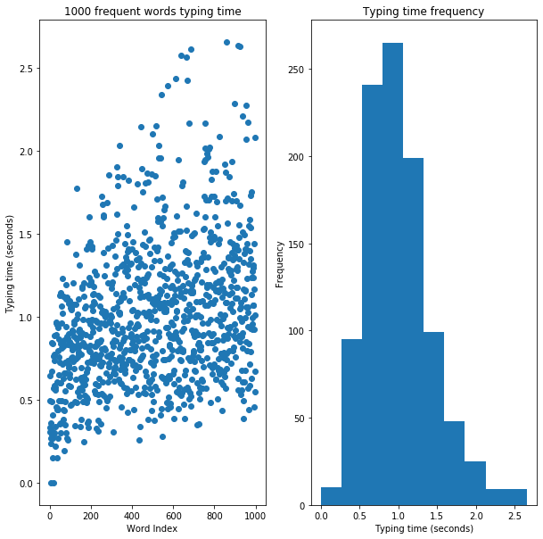
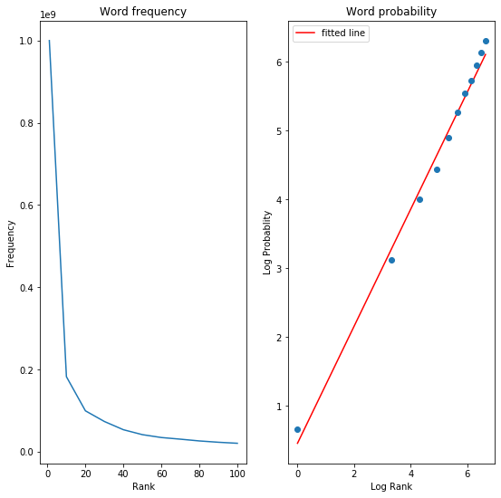

Goals
1. Modeling the keyboard
2. Fiit’s law parameter estimation: r-squared = 0.709


3. Average typing time of 1000 most frequent words: 0.99

4. Zipf’s law parameter estimation & average typing time of 1000 most frequent words: 0.71

import matplotlib.pyplot as plt
import math
import numpy
numpy.set_printoptions(precision=2)
import scipy.stats as stats
import statsmodels.api as sm
from statsmodels.graphics.regressionplots import abline_plot
import seaborn as sns
1. Keyboard modeling
# Define keyboard
line1 = 'qwertyuiop'
line2 = 'asdfghjkl'
line3 = 'zxcvbnm'
# Define a keyboard as a list of keys.
# Each key also mentions its position in the keyboard (line number, column number)
keyboard = [(i, (0, ni)) for ni, i in enumerate(line1)] + [(i, (1, ni)) for ni, i in enumerate(line2)] + [(i, (2, ni)) for ni, i in enumerate(line3)]
# Define empty matrices to hold the results
ids = numpy.zeros((26, 26))
Ds = numpy.zeros((26, 26))
W = 1
alphabet = line1 + line2 + line3
Fitts’ law predicts the time MT required to select a target of size W that is located D away: $MT = a + b\cdot\log_{2}\left ( 1+\frac{D}{W} \right )$, where ID = $\log_{2}\left ( 1+\frac{D}{W} \right )$ is the index of difficulty
# Get the index of difficulty (ID) for each key combination
for ns, keystart in enumerate(alphabet):
for ne, keyend in enumerate(alphabet):
xs, ys, xe, ye = keyboard[ns][1][1] + 2/5*keyboard[ns][1][0], keyboard[ns][1][0], keyboard[ne][1][1] + 2/5*keyboard[ne][1][0], keyboard[ne][1][0]
# Compute euclidian distance between the startkey and endkey
D = math.sqrt((xe - xs)**2 + (ye - ys)**2)
Ds[ns, ne] = D
# Use Fitts' law formula
ids[ns, ne] = math.log2(1 + D/W)
ids
array([[0. , 1. , 1.58, 2. , 2.32, 2.58, 2.81, 3. , 3.17, 3.32, 1.05,
1.44, 1.85, 2.18, 2.46, 2.7 , 2.9 , 3.08, 3.24, 1.66, 1.88, 2.15,
2.4 , 2.63, 2.83, 3.02],
[1. , 0. , 1. , 1.58, 2. , 2.32, 2.58, 2.81, 3. , 3.17, 1.12,
1.05, 1.44, 1.85, 2.18, 2.46, 2.7 , 2.9 , 3.08, 1.59, 1.66, 1.88,
2.15, 2.4 , 2.63, 2.83],
[1.58, 1. , 0. , 1. , 1.58, 2. , 2.32, 2.58, 2.81, 3. , 1.53,
1.12, 1.05, 1.44, 1.85, 2.18, 2.46, 2.7 , 2.9 , 1.74, 1.59, 1.66,
1.88, 2.15, 2.4 , 2.63],
[2. , 1.58, 1. , 0. , 1. , 1.58, 2. , 2.32, 2.58, 2.81, 1.92,
1.53, 1.12, 1.05, 1.44, 1.85, 2.18, 2.46, 2.7 , 1.99, 1.74, 1.59,
1.66, 1.88, 2.15, 2.4 ],
[2.32, 2. , 1.58, 1. , 0. , 1. , 1.58, 2. , 2.32, 2.58, 2.24,
1.92, 1.53, 1.12, 1.05, 1.44, 1.85, 2.18, 2.46, 2.26, 1.99, 1.74,
1.59, 1.66, 1.88, 2.15],
[2.58, 2.32, 2. , 1.58, 1. , 0. , 1. , 1.58, 2. , 2.32, 2.51,
2.24, 1.92, 1.53, 1.12, 1.05, 1.44, 1.85, 2.18, 2.5 , 2.26, 1.99,
1.74, 1.59, 1.66, 1.88],
[2.81, 2.58, 2.32, 2. , 1.58, 1. , 0. , 1. , 1.58, 2. , 2.74,
2.51, 2.24, 1.92, 1.53, 1.12, 1.05, 1.44, 1.85, 2.72, 2.5 , 2.26,
1.99, 1.74, 1.59, 1.66],
[3. , 2.81, 2.58, 2.32, 2. , 1.58, 1. , 0. , 1. , 1.58, 2.94,
2.74, 2.51, 2.24, 1.92, 1.53, 1.12, 1.05, 1.44, 2.91, 2.72, 2.5 ,
2.26, 1.99, 1.74, 1.59],
[3.17, 3. , 2.81, 2.58, 2.32, 2. , 1.58, 1. , 0. , 1. , 3.12,
2.94, 2.74, 2.51, 2.24, 1.92, 1.53, 1.12, 1.05, 3.08, 2.91, 2.72,
2.5 , 2.26, 1.99, 1.74],
[3.32, 3.17, 3. , 2.81, 2.58, 2.32, 2. , 1.58, 1. , 0. , 3.27,
3.12, 2.94, 2.74, 2.51, 2.24, 1.92, 1.53, 1.12, 3.24, 3.08, 2.91,
2.72, 2.5 , 2.26, 1.99],
[1.05, 1.12, 1.53, 1.92, 2.24, 2.51, 2.74, 2.94, 3.12, 3.27, 0. ,
1. , 1.58, 2. , 2.32, 2.58, 2.81, 3. , 3.17, 1.05, 1.44, 1.85,
2.18, 2.46, 2.7 , 2.9 ],
[1.44, 1.05, 1.12, 1.53, 1.92, 2.24, 2.51, 2.74, 2.94, 3.12, 1. ,
0. , 1. , 1.58, 2. , 2.32, 2.58, 2.81, 3. , 1.12, 1.05, 1.44,
1.85, 2.18, 2.46, 2.7 ],
[1.85, 1.44, 1.05, 1.12, 1.53, 1.92, 2.24, 2.51, 2.74, 2.94, 1.58,
1. , 0. , 1. , 1.58, 2. , 2.32, 2.58, 2.81, 1.53, 1.12, 1.05,
1.44, 1.85, 2.18, 2.46],
[2.18, 1.85, 1.44, 1.05, 1.12, 1.53, 1.92, 2.24, 2.51, 2.74, 2. ,
1.58, 1. , 0. , 1. , 1.58, 2. , 2.32, 2.58, 1.92, 1.53, 1.12,
1.05, 1.44, 1.85, 2.18],
[2.46, 2.18, 1.85, 1.44, 1.05, 1.12, 1.53, 1.92, 2.24, 2.51, 2.32,
2. , 1.58, 1. , 0. , 1. , 1.58, 2. , 2.32, 2.24, 1.92, 1.53,
1.12, 1.05, 1.44, 1.85],
[2.7 , 2.46, 2.18, 1.85, 1.44, 1.05, 1.12, 1.53, 1.92, 2.24, 2.58,
2.32, 2. , 1.58, 1. , 0. , 1. , 1.58, 2. , 2.51, 2.24, 1.92,
1.53, 1.12, 1.05, 1.44],
[2.9 , 2.7 , 2.46, 2.18, 1.85, 1.44, 1.05, 1.12, 1.53, 1.92, 2.81,
2.58, 2.32, 2. , 1.58, 1. , 0. , 1. , 1.58, 2.74, 2.51, 2.24,
1.92, 1.53, 1.12, 1.05],
[3.08, 2.9 , 2.7 , 2.46, 2.18, 1.85, 1.44, 1.05, 1.12, 1.53, 3. ,
2.81, 2.58, 2.32, 2. , 1.58, 1. , 0. , 1. , 2.94, 2.74, 2.51,
2.24, 1.92, 1.53, 1.12],
[3.24, 3.08, 2.9 , 2.7 , 2.46, 2.18, 1.85, 1.44, 1.05, 1.12, 3.17,
3. , 2.81, 2.58, 2.32, 2. , 1.58, 1. , 0. , 3.12, 2.94, 2.74,
2.51, 2.24, 1.92, 1.53],
[1.66, 1.59, 1.74, 1.99, 2.26, 2.5 , 2.72, 2.91, 3.08, 3.24, 1.05,
1.12, 1.53, 1.92, 2.24, 2.51, 2.74, 2.94, 3.12, 0. , 1. , 1.58,
2. , 2.32, 2.58, 2.81],
[1.88, 1.66, 1.59, 1.74, 1.99, 2.26, 2.5 , 2.72, 2.91, 3.08, 1.44,
1.05, 1.12, 1.53, 1.92, 2.24, 2.51, 2.74, 2.94, 1. , 0. , 1. ,
1.58, 2. , 2.32, 2.58],
[2.15, 1.88, 1.66, 1.59, 1.74, 1.99, 2.26, 2.5 , 2.72, 2.91, 1.85,
1.44, 1.05, 1.12, 1.53, 1.92, 2.24, 2.51, 2.74, 1.58, 1. , 0. ,
1. , 1.58, 2. , 2.32],
[2.4 , 2.15, 1.88, 1.66, 1.59, 1.74, 1.99, 2.26, 2.5 , 2.72, 2.18,
1.85, 1.44, 1.05, 1.12, 1.53, 1.92, 2.24, 2.51, 2. , 1.58, 1. ,
0. , 1. , 1.58, 2. ],
[2.63, 2.4 , 2.15, 1.88, 1.66, 1.59, 1.74, 1.99, 2.26, 2.5 , 2.46,
2.18, 1.85, 1.44, 1.05, 1.12, 1.53, 1.92, 2.24, 2.32, 2. , 1.58,
1. , 0. , 1. , 1.58],
[2.83, 2.63, 2.4 , 2.15, 1.88, 1.66, 1.59, 1.74, 1.99, 2.26, 2.7 ,
2.46, 2.18, 1.85, 1.44, 1.05, 1.12, 1.53, 1.92, 2.58, 2.32, 2. ,
1.58, 1. , 0. , 1. ],
[3.02, 2.83, 2.63, 2.4 , 2.15, 1.88, 1.66, 1.59, 1.74, 1.99, 2.9 ,
2.7 , 2.46, 2.18, 1.85, 1.44, 1.05, 1.12, 1.53, 2.81, 2.58, 2.32,
2. , 1.58, 1. , 0. ]])
2. Fiit’s law parameter estimation
# This function opens the file, and reads the startkey, endkey, and duration of each typing stroke
# and returns the index of difficulty ID, and time required
def get_keystrokes(filename, ids):
ID, MT = [], []
with open(filename, 'r') as _file:
startime = 0
for n, line in enumerate(_file):
#print(n, line)
try:
startkey, stopkey, time = line.split(",")
#print(startkey, stopkey, time)
time = float(time.rsplit('\n')[0])
# if startkey == 'None':
if n == 0:
startime = time
continue
startkey = startkey.split("'")[1]
stopkey = stopkey.split("'")[1]
if startkey not in alphabet or stopkey not in alphabet:
continue
ns = alphabet.index(startkey)
ne = alphabet.index(stopkey)
mt = time - startime
MT.append(mt)
ID.append(ids[ns, ne])
startime = time
except IndexError:
pass
return ID, MT
# Estimate the parameters of Fitts' law
def analyse_keystrokes(ID, MT, ax):
ax.plot(ID, MT, 'o')
X = ID
y = MT
X = sm.add_constant(X)
model = sm.OLS(y, X).fit()
predictions = model.predict(X)
print(model.summary())
abline_plot(model_results=model, ax=ax)
return (model.rsquared, model.conf_int())
View of the file
import pandas as pd
pd.read_csv('keystrokes.csv')
| None | 't' | 1603459783.882251 | |
|---|---|---|---|
| 0 | 't' | 'h' | 1.603460e+09 |
| 1 | 'h' | 'e' | 1.603460e+09 |
| 2 | 'e' | 'b' | 1.603460e+09 |
| 3 | 'b' | 'r' | 1.603460e+09 |
| 4 | 'r' | 'o' | 1.603460e+09 |
| 5 | 'o' | 'w' | 1.603460e+09 |
| 6 | 'w' | 'n' | 1.603460e+09 |
| 7 | 'n' | 'f' | 1.603460e+09 |
| 8 | 'f' | 'o' | 1.603460e+09 |
| 9 | 'o' | 'x' | 1.603460e+09 |
| 10 | 'x' | 'j' | 1.603460e+09 |
| 11 | 'j' | 'u' | 1.603460e+09 |
| 12 | 'u' | 'm' | 1.603460e+09 |
| 13 | 'm' | 'p' | 1.603460e+09 |
| 14 | 'p' | 's' | 1.603460e+09 |
| 15 | 's' | 'o' | 1.603460e+09 |
| 16 | 'o' | 'v' | 1.603460e+09 |
| 17 | 'v' | 'e' | 1.603460e+09 |
| 18 | 'e' | 'r' | 1.603460e+09 |
| 19 | 'r' | 't' | 1.603460e+09 |
| 20 | 't' | 'h' | 1.603460e+09 |
| 21 | 'h' | 'e' | 1.603460e+09 |
| 22 | 'e' | 'g' | 1.603460e+09 |
| 23 | 'g' | 'r' | 1.603460e+09 |
| 24 | 'r' | 'a' | 1.603460e+09 |
| 25 | 'a' | 'y' | 1.603460e+09 |
| 26 | 'y' | 'd' | 1.603460e+09 |
| 27 | 'd' | 'o' | 1.603460e+09 |
| 28 | 'o' | 'g' | 1.603460e+09 |
| 29 | 'g' | Key.esc | 1.603460e+09 |
# How well Fitts' model fits: graphical representation, a goodness of fit of choice, and the uncertainty with regards to estimated parameters
fig = plt.figure()
ax = fig.add_subplot(111)
ID, MT = get_keystrokes('keystrokes.csv', ids)
analyse_keystrokes(ID, MT, ax)
ax.set_title('regression plot')
plt.show()
fig = plt.figure()
ax = fig.add_subplot(111)
sns.regplot(x=ID, y=MT, x_ci='ci', ci=95)
ax.set_title('95% confidence regression plot')
plt.show()
OLS Regression Results
==============================================================================
Dep. Variable: y R-squared: 0.709
Model: OLS Adj. R-squared: 0.698
Method: Least Squares F-statistic: 65.63
Date: Mon, 02 Nov 2020 Prob (F-statistic): 1.05e-08
Time: 12:52:49 Log-Likelihood: 48.860
No. Observations: 29 AIC: -93.72
Df Residuals: 27 BIC: -90.99
Df Model: 1
Covariance Type: nonrobust
==============================================================================
coef std err t P>|t| [0.025 0.975]
------------------------------------------------------------------------------
const 0.0404 0.032 1.265 0.217 -0.025 0.106
x1 0.1184 0.015 8.101 0.000 0.088 0.148
==============================================================================
Omnibus: 3.192 Durbin-Watson: 2.125
Prob(Omnibus): 0.203 Jarque-Bera (JB): 2.001
Skew: -0.150 Prob(JB): 0.368
Kurtosis: 4.251 Cond. No. 9.68
==============================================================================
Warnings:
[1] Standard Errors assume that the covariance matrix of the errors is correctly specified.
3. Average typing time of 1000 most frequent words
View of the file
pd.read_csv('mostcommonwords.txt')
| the | |
|---|---|
| 0 | of |
| 1 | to |
| 2 | and |
| 3 | a |
| 4 | in |
| ... | ... |
| 994 | meant |
| 995 | quotient |
| 996 | teeth |
| 997 | shell |
| 998 | neck |
999 rows × 1 columns
# Most Common words
# Estimate the average time needed to type the 1000 most common english words
# These words are given in the accompanying mostcommonwords.txt file.
# No information of frequency is given, so assume that each word is equally probable
# Consider that the first key is "free", i.e. time starts only after the first key of the word is pressed
slope = 0.12
intercept = 0.03
with open("mostcommonwords.txt", 'r') as _file:
T = []
for nline, line in enumerate(_file):
t = 0
line = line[:-1]
#print(line, len(line))
for i in range(0, len(line)-1):
try:
ns = alphabet.index(line[i])
ne = alphabet.index(line[i+1])
id = ids[ns, ne]
t += intercept + (slope*id)
except ValueError:
pass
T.append(t)
print("Average time needed")
print(numpy.mean(T))
Average time needed
0.9999165686462256
fig = plt.figure(figsize=(10, 10))
ax = fig.add_subplot(121)
axhist = fig.add_subplot(122)
ax.plot(range(0,len(T)), T, 'o')
ax.set_ylabel("Typing time (seconds)")
ax.set_xlabel("Word Index")
ax.set_title('1000 frequent words typing time')
axhist.hist(T)
axhist.set_xlabel("Typing time (seconds)")
axhist.set_ylabel("Frequency")
axhist.set_title('Typing time frequency')
plt.show()
plt.close()
4. Zipf’s law parameter estimation & average typing time of 1000 most frequent words
Zipf’s law states that the frequency of a word is inversely proportional to its rank in the frequency table: $p(k) = \frac{\frac{1}{k^{s}}}{\sum 1/i^{s}}$
# Modeling word frequency
# Frenquency/occurence pairs for the 100 most frequent english words to estimate s of Zipf's model
frequency = [1e9, 182e6, 99e6, 73e6, 53e6, 41e6, 34e6, 30e6, 25.7e6, 22.5e6, 20e6]
rank = [1, 10, 20, 30, 40, 50, 60, 70, 80, 90, 100]
logfreq = [math.log(f, 2) for f in frequency]
logoc = [math.log(o, 2) for o in rank]
# Fit Zipf's model to the frequencey-rank relationship
prob = numpy.array(frequency)/sum(frequency)
logprob = numpy.array([math.log(f, 2) for f in prob]) * (-1)
slope, intercept, r_value, p_value, std_err = stats.linregress(logoc, logprob)
s = round(slope, 2)
## Plot the data + fitted model
fig = plt.figure(figsize=(9, 9))
ax = fig.add_subplot(121)
axlog = fig.add_subplot(122)
ax.plot(rank, frequency, '-')
ax.set_title('Word frequency')
ax.set_xlabel("Rank")
ax.set_ylabel("Frequency")
axlog.plot(logoc, intercept + s*(numpy.array(logoc)), 'r', label='fitted line')
axlog.plot(logoc, logprob, 'o')
axlog.set_title('Word probability')
axlog.set_xlabel("Log Rank")
axlog.set_ylabel("Log Probablity")
plt.legend()
plt.show()
## Use this new information to evaluate the average time it takes to type the 1000 most common words
_sum = sum([1/(i**s) for i in list(range(1, 1001))])
# Compute the p(k)'s for each k
weights = []
for nt in range(1, 1001):
weight = (1/(nt**s))/_sum
weights.append(weight)
weighted_sum = 0
for w,t in zip(weights, T):
weighted_sum += w*t
print(weighted_sum)
0.7124495668649804